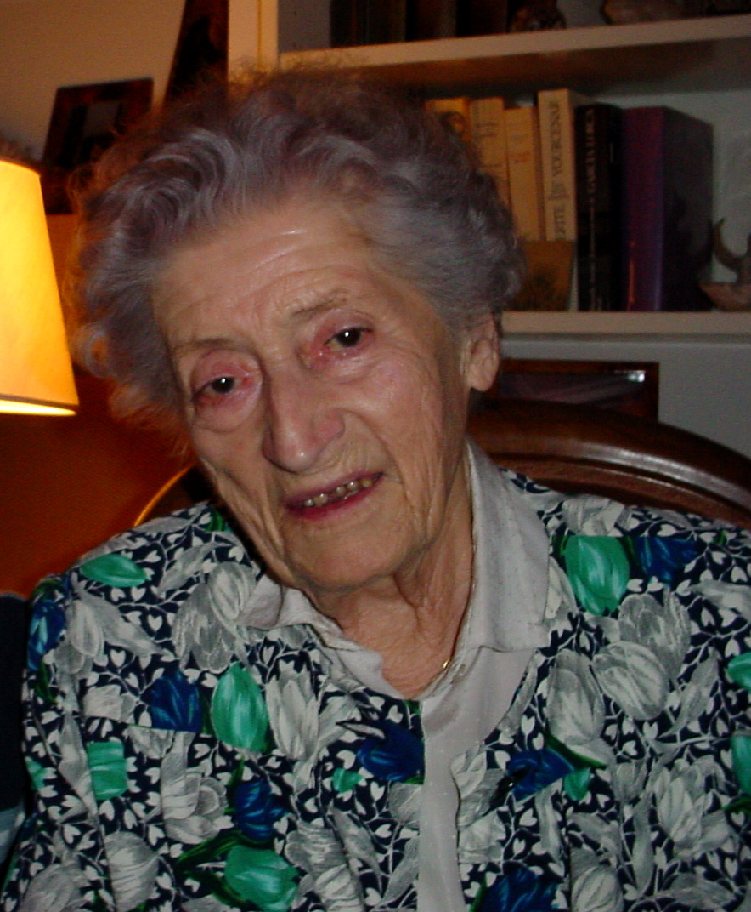

Présentation
- Nom : Aubrac
- Prénom : Lucie
- Nom de naissance : Lucie Bernard
- Date de naissance : 29 juin 1912
- Lieu de naissance : Paris (14e arrondissement)
- Date de décès : 14 mars 2007
- Lieu de décès : Hôpital suisse de Paris
- Sépulture : Cimetière de Salornay-sur-Guye
- Nationalité : Française
- Professions : Enseignante, résistante
- Conjoint : Raymond Aubrac

Histoire

Lucie Aubrac, née Lucie Bernard en 1912 à Paris, grandit dans un milieu modeste. Très jeune, elle se montre brillante à l’école et s’oriente vers des études supérieures. Elle devient professeure agrégée d’histoire-géographie, un métier qu’elle exercera avec passion.
En 1939, elle épouse Raymond Aubrac. Lorsque la Seconde Guerre mondiale éclate et que la France est occupée par l’Allemagne nazie, Lucie refuse la soumission. Le couple s’installe à Lyon et entre très rapidement dans la Résistance.
Lucie Aubrac participe à la création du mouvement Libération-Sud. Elle joue un rôle essentiel dans la diffusion de tracts, la transmission de messages, le recrutement de résistants et l’organisation d’actions clandestines, souvent très dangereuses.
Elle est particulièrement connue pour son courage et son sang-froid, notamment lorsqu’elle organise l’évasion de son mari Raymond et de plusieurs autres résistants emprisonnés par la Gestapo en 1943. Cet acte reste l’un des épisodes les plus marquants de la Résistance française.
Engagement politique

L’engagement politique de Lucie Aubrac commence dès sa jeunesse. Dans les années 1930, elle adhère aux Jeunesses communistes, attirée par les idées de justice sociale, de solidarité et de lutte contre le fascisme.
Pendant la Seconde Guerre mondiale, ses convictions politiques se traduisent par un engagement total dans la Résistance. Elle lutte activement contre l’occupation allemande et le régime de Vichy, au péril de sa vie. Son action ne se limite pas aux idées : elle agit concrètement sur le terrain.
Après la guerre, Lucie Aubrac continue à défendre ses valeurs. Elle témoigne de son expérience auprès des jeunes générations afin de transmettre la mémoire de la Résistance et rappeler l’importance de la liberté, du courage et de l’engagement citoyen dans une démocratie.